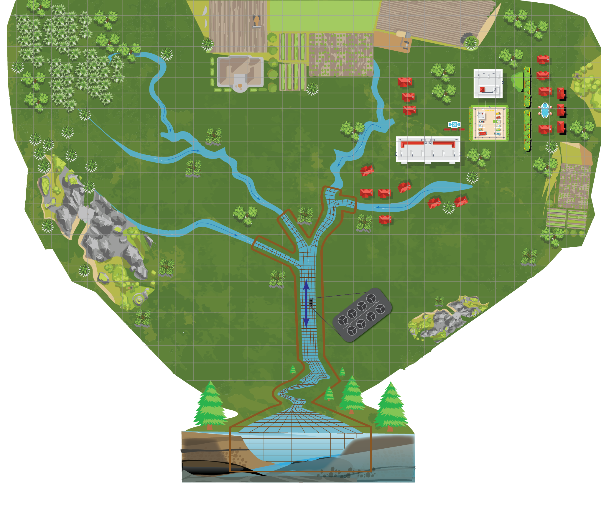
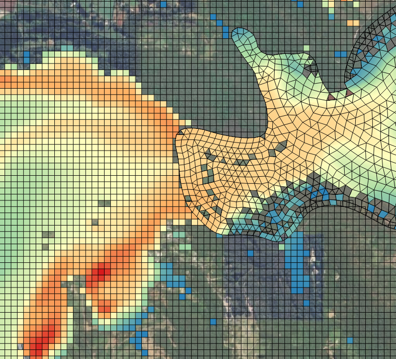

1 Overview
1.1 Context
TUFLOW CATCH enables the seamless bottom-up simulation of whole-of-catchment hydrologic, hydraulic, pollutant export and receiving waterway processes. It supports simulation of these processes from top of catchment to receiving waterway outlet via solution of the relevant equations of motion and transport, without recourse to lumped spatial or temporal assumptions. It draws on the power of GPU acceleration to explicitly simulate catchment water flow and pollutant processes in the surface and subsurface domains, and automatically reconfigures these predictions to drive downstream multidimensional receiving waterway hydrodynamic, sediment transport, water quality and other environmental models. This modern framework, that draws on advanced compute capability, allows environmental practitioners to holistically manage and understand catchments of interest and their receiving waters in an efficient, integrated and rigorous manner, without the need for manual model linking or reliance on top-down average assumption modelling techniques. TUFLOW CATCH’s design is flexible so as to support tailoring of its configuration to meet individual application demands, and as such allows for execution of multiannual studies such as (but not limited to):
- Seamless assessment of the impact of land use or other catchment based changes on the hydrodynamics of downstream receiving waterways (i.e. without the need to simulate pollutant export, see Section 1.3, bullet point 1)
- Assessment of the impact of land use or other changes on catchment hydrology and/or pollutant export (i.e. without the need to directly include receiving waterway numerical simulation, see Section Section 1.3, bullet point 2)
- Assessment of the efficacy of proposed catchment changes on downstream receiving riverine or estuarine health (i.e. fully integrated catchment and receiving waterway simulation of water flow and pollutant dynamics, see Section Section 1.3, bullet point 3)
- Assessment of the interaction of catchment inflows with water supply offtakes or other sensitive receptors
- Sediment and other pollutant export catchment dynamics investigations
- Various combinations of the above
1.2 Features
Several key features have been included in the design of TUFLOW CATCH to support its use. Some are listed below.
- Simulation engine. To affect whole-of-catchment simulation, TUFLOW CATCH links and augments the power and functionality of two existing TUFLOW engines. This means that the decades of development, expertise and rigour embedded in the TUFLOW suite of products is exploited by TUFLOW CATCH. These existing TUFLOW engines are:
- TUFLOW HPC: Fixed grid simulation of surface and subsurface catchment hydrology, hydraulics, pollutant export and transport
- TUFLOW FV: Flexible mesh simulation of receiving waterway hydrodynamic, advection dispersion, heat, sediment transport, water quality and particle tracking
Conceptually, TUFLOW CATCH links and coordinates TUFLOW HPC and TUFLOW FV as in Figure 1.1. TUFLOW HPC coverage is represented by the fixed grid iconography, and TUFLOW FV is shown as contained within the enclosing thick brown boundary line. This intention is that this figure conveys the ability of TUFLOW CATCH (in its most advanced configuration) to use advanced numerical techniques (free of top-down lumping assumptions) to seamlessly simulate water and pollutant dynamics from top of catchment to receiving waterway outlet. TUFLOW CATCH can also be configured to simulate other (less advanced but still important and relevant) combinations of environmental flows and pollutant transport processes (see Section 1.3).

- Pollutant Export. TUFLOW CATCH adds pollutant export functionality to TUFLOW HPC. Pollutants are able to be liberated on a cell by cell basis and under a range of user-selectable algorithms (accumulation-washoff or shear stress based, for example), and then routed as surface and/or subsurface flows and concentrations, via solution of the equations of motion and transport, rather than using lumped top-down average assumptions
- Automatic linkage When required, TUFLOW CATCH automatically links the bottom of catchment TUFLOW HPC predictions (for both flow and pollutant concentrations) to the upstream of TUFLOW FV’s model domain to present a single integrated modelling platform to the user, with no need for manual handling or other post/pre processing. To affect this, TUFLOW CATCH automatically
- Determines the spatial locations where surface and subsurface waters drain to the user defined TUFLOW FV mesh (or GIS polygon if TUFLOW FV simulation is not selected) and designates these as inflow locations to TUFLOW FV (or simply a single exit point if a polygon is specified), and then
- Writes the TUFLOW HPC predictions as fully formatted TUFLOW FV inflow boundary conditions files and blocks, either as nodestrings or elements. If a downstream polygon is specified then timeseries of summed outlet flows and masses are reported
- Command syntax. TUFLOW CATCH uses familiar TUFLOW style command == argument(s) syntax that has a long established pedigree within all other TUFLOW products
- Flexibility of constituents. TUFLOW CATCH, when combining TUFLOW HPC and TUFLOW FV in full can simulate any constituents that are initialised in TUFLOW FV, across all its modules, including sediment transport and water quality. TUFLOW CATCH can also run TUFLOW HPC in pollutant generation mode only (without activating TUFLOW FV, i.e. the ‘pollutant export’ configuration, see Section 1.3), and in this instance, users can specify any pollutants they wish to simulate (e.g. ‘PFAS’ or ‘DDT’ etc.) - these do not need to be simulated by TUFLOW FV or its modules
- Log file user feedback. TUFLOW CATCH simulations generate TUFLOW HPC and TUFLOW FV log files as per usual that report all simulation configuration details for review in a single consolidated location
- Results viewing. TUFLOW CATCH has its own freely available QGIS plugin to support viewing and interrogation of combined TUFLOW HPC and TUFLOW FV results, as a single data set, such as Figure 1.2.

1.3 Configurations
Given its construction philosophy, TUFLOW CATCH can be set up and executed in the following core supported configurations:
- Hydrology. The most basic configuration of TUFLOW CATCH is to simulate water movement (without generated pollutants) through surface (and optionally subsurface) catchment flows, and to automatically route these into a downstream receiving hydrodynamic (only) waterway model. At the point of routing, constant/timeseries salinity and temperature may be assigned to allow baroclinic TUFLOW FV receiving water modelling. Use cases might include investigation of velocity fields in receiving waterways under a range of separate or continuous catchment inflow regimes, or modification of these fields in response to changes in catchment conditions, such as urbanisation. In this instance, the computational engines would be configured as follows:
- TUFLOW HPC: Simulate surface (and optionally subsurface) hydrology, and optionally constant or timeseries temperature and salinity. In addition to map outputs, write inflow boundary condition files for TUFLOW FV. These only contain water flows with optionally temperature and salinity, without associated generated pollutant concentrations
- TUFLOW FV: Simulate and report 2D or 3D hydrodynamics, optionally including temperature and salinity
- Pollutant Export. The next level of functionality offered by TUFLOW CATCH is the addition of pollutant export within the catchment simulation, without the explicit and subsequent simulation of the fate and transport of these pollutants in a downstream receiving model. Use cases might include investigation of pollutant export properties of a catchment under differing rainfall conditions, or the variation of this export in response to the implementation of intervention measures or land use changes. In this instance, the computational engines would be configured as follows:
- TUFLOW HPC: Simulate surface (and optionally subsurface) hydrology, with pollutant export and transport. In addition to map outputs, write summary timeseries of total flows and pollutant export at a user defined catchment outlet. This outlet is defined by a user specified GIS polygon rather than a TUFLOW FV mesh
- TUFLOW FV: No simulation
- Integrated. This level represents the full functionality offered by TUFLOW CATCH. It augments the Pollutant Export configuration above by including the explicit 2D or 3D simulation of the fate and transport of all catchment derived flows and pollutants within the downstream waterway model. Use cases might include the investigation of the efficacy of catchment intervention works on downstream water quality over multiannual periods. In this instance, the computational engines would be configured as follows:
- TUFLOW HPC: Simulate surface (and optionally subsurface) hydrology, with pollutant export and transport. In addition to map outputs, write summary timeseries of total flow and pollutant export at catchment outlet, as well as fully formatted inflow and concentration boundary condition files for TUFLOW FV
- TUFLOW FV: Direct simulation of 2D or 3D baroclinic hydrodynamics, with sediment transport and/or water quality (and optionally other TUFLOW FV modules such as particle tracking)
Whilst not core to TUFLOW CATCH’s ultimate functionality, other configurations are also available:
TUFLOW HPC calibration only. This covers the use case where a TUFLOW HPC modeller wishes to progress catchment hydraulic model calibration independently of pollutant export simulation and TUFLOW FV activities
TUFLOW FV calibration only. This covers the use case where a TUFLOW FV modeller wishes to progress receiving model calibration independently of TUFLOW HPC activities. Inflows for this configuration would likely be turned off, with associated tasks therefore being undertaken during largely dry periods
If only the simulation of surface and subsurface water flows (and not pollutants) are of interest, and with no intended linkage between TUFLOW HPC and TUFLOW FV (i.e. the Hydrology configuration above but with no linkage to TUFLOW FV), then TUFLOW HPC can be run in isolation without the need for TUFLOW CATCH. Simply setting up and running TUFLOW HPC with appropriate results outputs at bottom of catchment (via PO or similar outputs) would suffice. If either linkage with TUFLOW FV or simulation of pollutant export is of interest, then TUFLOW CATCH is required.
TUFLOW CATCH supports one-way linking of flows and concentrations from TUFLOW HPC to TUFLOW FV.
1.4 Science
The science underpinning TUFLOW CATCH is that developed for TUFLOW HPC and TUFLOW FV (including their respective modules) and is described in those user and science manuals, and relevant release notes here:
1.5 Versioning
The TUFLOW suite of products (which includes TUFLOW CATCH) has moved to a uniform versioning system. This system uses a year.minor.patch convention. In the new system:
- The year corresponds to the major version number e.g.
2025.0.0. Major releases are the only releases that will admit the possibility of breaking changes. There will be one major release per year - Minor releases contain new features and bug fixes, but no breaking changes and increment the minor version number, e.g.
2025.1.0 - Patch releases are bug fixes only and increment the patch version number, e.g.
2025.0.1
1.6 Support
BMT sells, distributes and supports TUFLOW CATCH. Contact support@tuflow.com and sales@tuflow.com for support and sales inquiries, respectively.
Several supporting appendices have also been included in this manual. These contain content to assist users in applying TUFLOW CATCH. These appendices are interlinked and hyperlinked with content from the body of the manual where appropriate, and are:
- Appendix A Interactive listing of all commands, and their syntax, arguments, descriptions and cross references
- Appendix B Interactive listing of all parameters, and their symbols, units, ranges and links to underlying science descriptions
- Appendix C Description of output files and their associated data fields
- Appendix D A purpose built suite of small TUFLOW CATCH demonstration models for free download and use
The user is directed to the respective manuals noted in Section 1.4 above for TUFLOW HPC and TUFLOW FV commands other than those specific to TUFLOW CATCH. All TUFLOW CATCH commands are described in this manual.
1.6.1 Tutorial models
A number of free Tutorial Models are available for download and are documented in the TUFLOW Wiki. No TUFLOW CATCH licence is required to simulate the tutorial models. Current tutorials include:
1.6.2 Demonstration Models
In addition to the tutorial models listed above, a free demonstration model and a small suite of simulations are available for download. See Appendix D for further details.